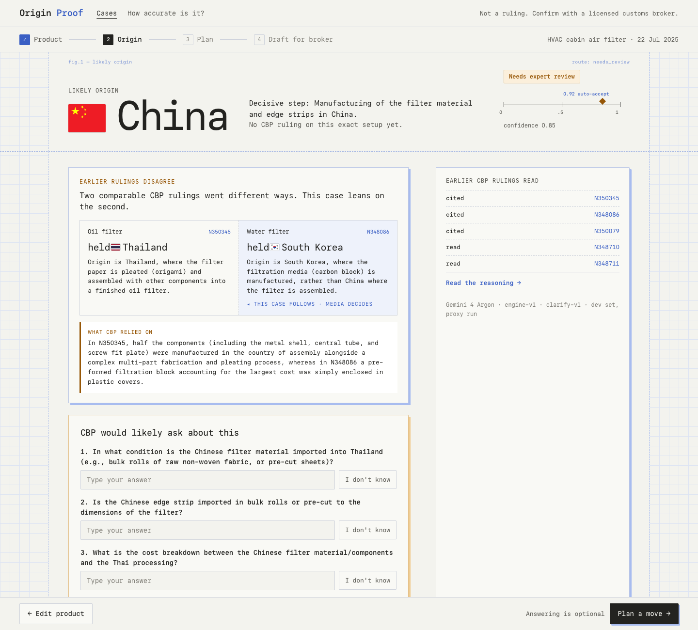
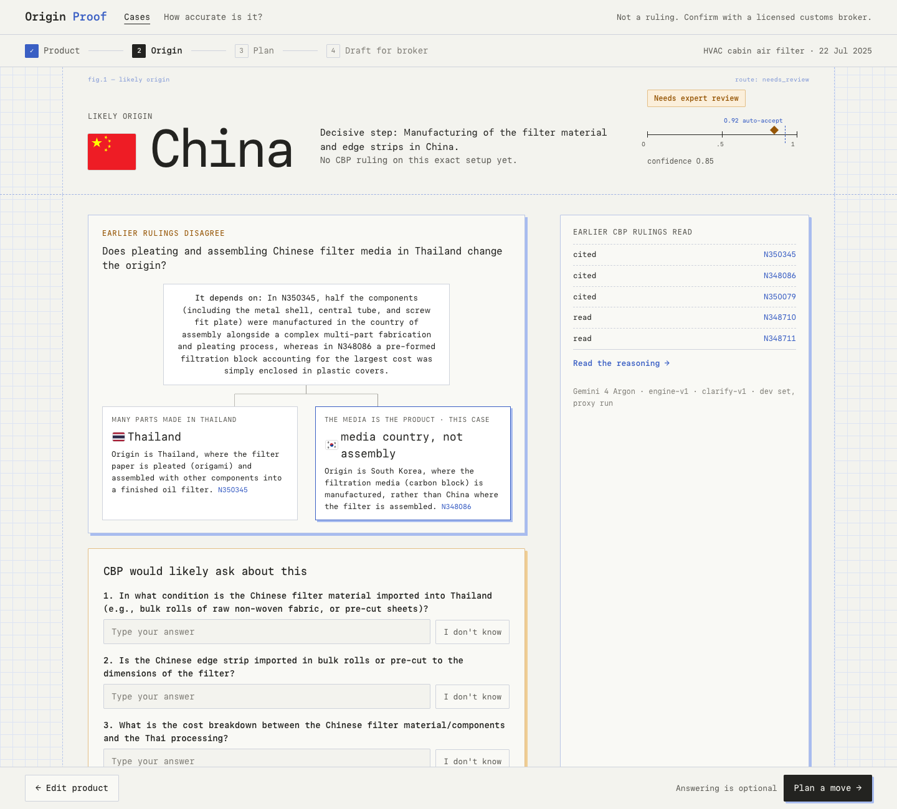
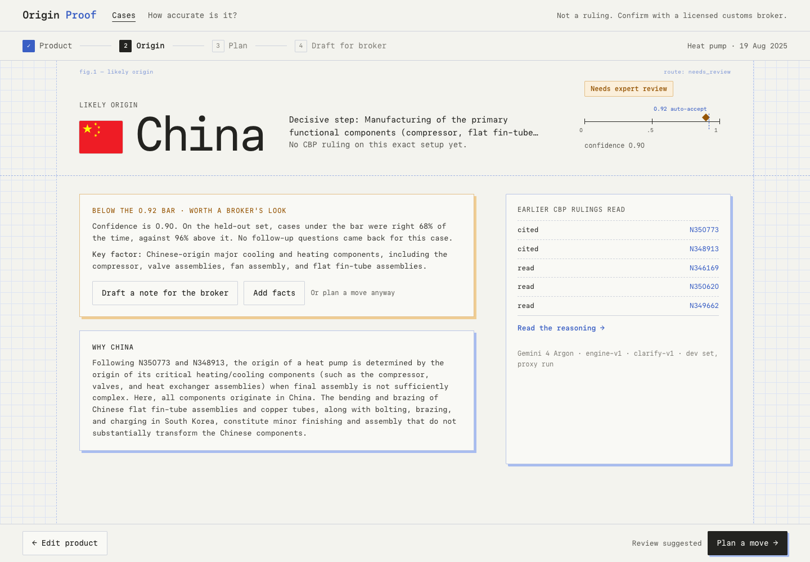
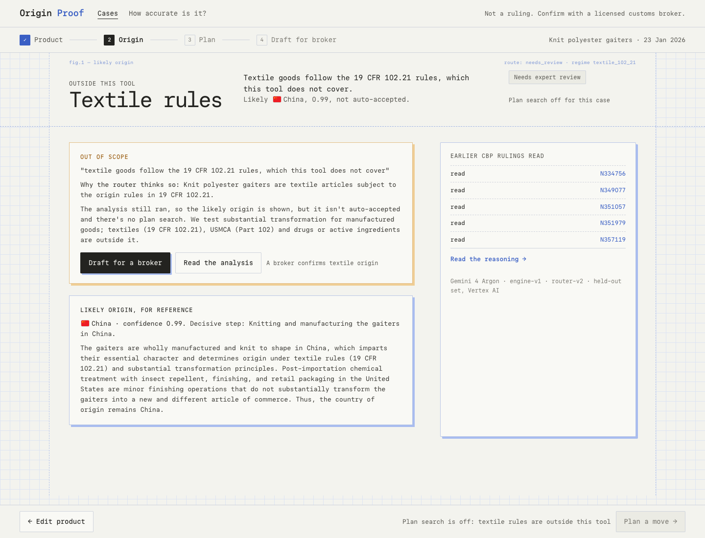
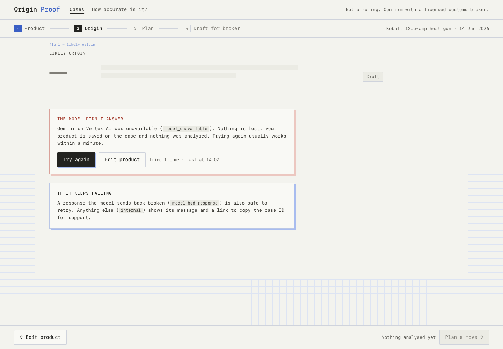

The states the Result screen (k2 band) can be in besides auto-accepted. Each frame uses a real recorded case: the cabin air filter N351082 and heat pump N351860 from the dev clarify and engine runs, the knit gaiters N357543 from the held-out set (Vertex AI). The heat gun's needs-review state with questions is already p-k2.html.





Option 1 for conflicts (endpoint text only), with the "this case follows" marker kept only if the backend adds it. The three other states as drawn.